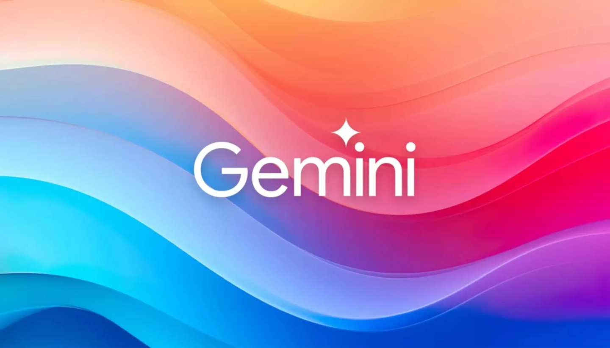

Bizziology Threads｜把 Gemini 當私人家教的 9 組學習 Prompt 框架
這則 Threads 的價值不是單一工具消息，而是把 AI 對話設計成「學習系統」：先拆技能，再診斷弱點，最後用練習與回饋循環推進。

9 類 prompt 可歸納成這些任務
- Skill Acquisition Map：把一個技能拆成階段、子技能與練習順序。
- Feynman Technique：要求 AI 用白話解釋，再逼自己補洞。
- Deliberate Practice：設計短週期、高回饋的刻意練習。
- Project-Based Learning：用小專案帶動知識整合。
- Anti-Procrastination：把拖延任務拆成 5–15 分鐘可啟動的行動。
- Feedback Loop：讓 AI 扮演教練，針對作品、解題或輸出給回饋。
- Concept Compression：把長概念壓成心智模型、比喻與考題。
- Gap Diagnosis：先測驗再安排學習路線。
- Reflection System：每次練習後固定問「做對什麼、卡在哪、下一步」。
官方查核
Google 的 Guided Learning、Learn About 與 LearnLM 路線，都強調 AI 不只是直接給答案，而是應該透過提示、引導、分步解釋與互動式提問幫助學習者建立理解。因此這類 prompt 的最佳用法，是把 Gemini 當「學習教練」而不是「代寫答案機」。
欄帥可直接拿來用的課程設計
- 讓學生先用 Gemini 生成技能地圖，再人工修正成自己的學習計畫。
- 每週交一份 AI 回饋紀錄：原始作品、AI 建議、人工判斷、下一版修正。
- 評量重點放在「提問品質、回饋吸收、反思深度」，而不是單純產出漂亮答案。
風險
- AI 可能把學習路線講得過度自信；正式課程仍需教師校準。
- 費曼技巧與刻意練習需要學習者真的輸出，不能只看 AI 解釋。
- 若涉及考試、證照或專業技能，需對照官方教材與題庫。
來源
- Bizziology Threads：Gemini learning prompt thread。
- Google：Guided Learning、Learn About、LearnLM 相關官方資料。